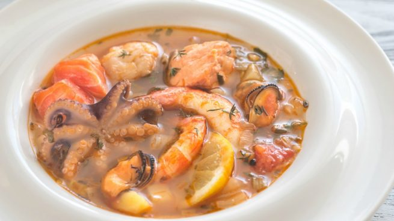

Sopa de Marisco y Verdura

La receta de sopa de marisco y verdura es una de las más apetecibles para cualquier época del año.
Es un plato
reconfortante que nos permitirá disfrutar de unas delicias de marisco, mezcladas con verdura fresca. Un
equilibrio natural muy beneficioso para el organismo que nos ayudará a sentirnos mejor. Si te apetece preparar
una comida deliciosa y quieres apostar por algún tipo de sopa, esta es tu receta. Toma nota de los pasos a
seguir y empieza a preparar una sopa de marisco y verdura deliciosa.
Ingredientes
- 200 gr de marisco
- 40 gr de pimiento morrón
- 49 gr de zanahoria
- 1 diente de ajo
- 30 gr de apio
- 1 tomate rojo
- Sal
- Pimienta
- Aceite de oliva
- Caldo de pescado
Cómo preparar una sopa de marisco y verdura:
- Esta receta de sopa de marisco y verdura es de las más fáciles de preparar que existe. El primer paso
será
preparar las verduras. Las pelaremos y las iremos picando finamente, serán la base para nuestra sopa.
- En una olla mediana añadiremos un poco de aceite y sofreiremos el ajo triturado. Debe estar unos
segundos,
simplemente que coja color, nada más. Iremos añadiendo los vegetales para que se vayan pochando poco a
poco.
El último de los ingredientes por ser el que mayor sabor aporta es el apio, además de tardar menos en
prepararse.
- Cuando tenemos las verduras doradas y un poco blandas, es el momento de añadir el marisco. Para esta
receta
podemos servirnos de cualquier tipo de marisco. Fresco o si es en lata, debe ser al natural, lo
trocearemos
y los reservaremos para este punto. La opción del marisco congelado también es aceptable. Simplemente lo
descongelamos y troceamos previamente.
- Una vez el marisco haya soltado sus jugos y estos estén bien unidos a los de las verduras, llega la hora
de
incorporar el caldo de pescado. Este elemento también lo podemos comprar preparado, existen multitud de
marcas que lo elaboran y envasan con métodos naturales. Aunque, si tienes tiempo puedes hacerlo
previamente,
siempre le dará un toque más especial.
- El último de los elementos que añadirá color y sabor a nuestra sopa es el tomate. Lo pelamos y lo
cortamos
en trozos grandes y lo incorporamos a la sopa. Todos los ingredientes deberán estar unos 30 minutos a
fuego
medio para que queden bien integrados. Salpimentamos al gusto y podemos servirla. Si te gusta con un
poco de
pasta, también está buenísima, aunque por si sola ya es una sopa bastante contundente y enérgica.